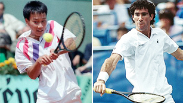
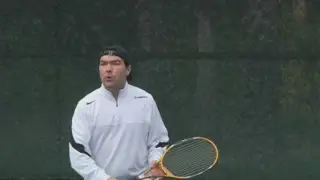
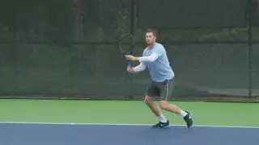

Previous: The Value of Optimism: Michael Chang | 🏠 Mental Game Home | Next: Thoughts on Andre Agassi
The Value of Optimism:
Comprehensive unified tennis knowledge base — Fundamentals, Stroke Analysis, Reference Library, and more
The Value of Optimism:
Your Game
By Allen Fox, Ph.D.

Michael Chang and Brad Gilbert: models of optimism.
Dr. Martin Seligman, a professor of psychology at the University of Pennsylvania, believes that optimists differ from pessimists in that they think negative or bad things are temporary, while pessimists think they are more lasting.
Effective competitors must deliberately strive to be optimistic by focusing on the positive elements of the court situation while downplaying the negative. This creates good emotions which will impact their games positively.
In the first two articles we saw how this focus was the difference in two of the most famous come from behind victories in professional tennis. These were Michael Chang’s amazing enduro win over Ivan Lendl at the French (Click Here), and Brad Gilbert’s mental destruction of Boris Becker at the U.S. Open. (Click Here.)
Now let’s apply the same principles in some concrete examples that are common at the club level. You might not ever win a match in a Slam, but you probably have your own tennis dreams that cultivating optimism will help you reach.
Emotion and Outcome
In competition your emotional state helps determine your performance, and it behooves you, therefore, to elevate your mood as best you can.
Put simply, you can become more optimistic by consciously looking for positives rather than negatives in most of the match situations in which you find yourself.
Consider what can happen if you start out a match playing badly. Do you quickly conclude that you are having a bad day and begin acting out negatively on court, allowing your negative thoughts to become a self-fulfilling prophecy?

When you focus on the negatives you are in reality making a choice.
Or do you tell yourself that it is simply a bad start and that your play will get better soon? Your answer will to a great extent determine the course of the rest of the match.
If you have just lost your serve and are down 1-3 in the first set, a bad thought would be, "Oh, oh! I'm down and liable to lose this set."
Allowing such a thought to run unchecked will usually lead down a pathway to other negative thoughts like, "It's not my day," or "I don't know what's wrong with my game."
Instead, once you recognize the first "bad" thought replace it quickly with good ones like, "Ok, I'm down a break. Now the pressure is on my opponent to hold serve for the rest of the set.”
Or, “I will squeeze him and force him to work and concentrate all set and see if he doesn't falter somewhere along the line."
These positive thoughts are as accurate as the pessimistic ones, but the emotional consequences are substantially better for your game.
For another example, if you choke on an important point the "bad" thought might be, "I had my chance, and I've blown it," leading down the bad thought pathway to "I'm a choker. I just don't have what it takes to win."
Awareness here is key. Recognize when a thought is pessimistic and self-defeating. Quickly replace it with something positive like, "The match isn't over, and I'll have more chances."
Or another positive alternative, "Everyone chokes sometimes. No big deal. I'll get other chances, and maybe I'll do better."
None of these thoughts—positive or negative--is totally wrong or totally right. But one helps and the other hurts. As a player you have the option to choose between them.
Here is another example of how staying optimistic can be the difference over the entire course of a match. Imagine you are playing the number one seed in a tournament and get off to a 5-1 lead in the first set.

How would you react if you hit a double fault on match point?
Next, imagine that you are serving and get up 40-0, with 3 match points, but you hit a couple of double faults and he comes back and wins the game. No problem, you are still up 5-2.
Suppose then you get ahead 0-40 on his serve, but miss some easy returns and lose those three set points too. Ultimately you lose that game as well. Still, you are up a service break at 5-3 and can finish him off by holding serve.
Unfortunately, this game turns into a see-saw battle where 3 more set points come and go, and you again end up on the short end by dropping serve.
Now here comes the test. At 4-5 with your opponent serving, suppose you reach break point again, this time at 30-40. You now have one more set point, after having just blown 9 set points in the previous three games.
Would you, at this juncture, feel optimistic or pessimistic about your chances of winning the point? Most people, after losing so many set points and seeing their lead slip away, become negative. They think it’s not their day for winning set points.
But is there a positive way to interpret the loss of 10 set points? You bet there is. 4Animation: MatchPoint Caption: Optimism is a matter of choice in a tight matches where match points come and go.
Just put yourself in your opponent's shoes. Imagine you had been down 1-5 and have managed somehow to fight off 9 set points.
But now after all you've been through you find yourself down yet another set point on your own serve. Make one mistake here and all your comeback effort will have yielded nothing.

Keep hitting your best shot! It will eventually come through for you.
In this situation you have to recognize that your opponent is down set point for the tenth time! He is probably not feeling that great himself—and maybe he feels worse than you. He knows he has been extremely fortunate and fears that his luck is very likely to run out.
Make a choice. A set point is a good thing to have no matter what has happened before. Believe that you can take advantage. Be optimistic and believe that this is the point where winning set point will happen!
This same kind of positive outlook can be applied to virtually every situation. Your forehand is your best shot and you’ve made a higher number of errors than usual. Keep hitting it! It’s your best shot and will come through eventually.
Is it getting late and dark? Is it hard to follow the ball? Your opponent will have trouble seeing and returning your serve. Get your first serve in.
Are you having trouble with your footing on a slippery court? Your opponent won't be able to change direction well. Hit behind him.
A Mega Thought
And here is a final, related mega-thought. Happiness and optimism are first cousins.
You are generally better off as a competitor if you are happy. The neuro-chemicals that your body releases when you are happy are not only good for your health (improving your immune system, etc.), but they also counter competitive stress and help you play better.
When you walk on court to play I advise you to say to yourself (or even out loud) "I am so lucky to be out here and able to play tennis today!" Be grateful for being able to play. You’ll enjoy yourself more and your results will show it.
Read More From Allen!
Visit him at www.allenfoxtennis.net

Winning the Mental Match Dr. Allen Fox
Tennis is mentally the most difficult sport due to it’s personal nature which makes winning and losing feel more important than they are. In this new book, Allen offers his proven solutions to problems such as choking, reducing stress, finishing matches, and developing confidence. Based on a life time of high level play and coaching success, it’s a must for all competitive players.
Click Here to Order.

Winning may not be everything, but Dr. Allen Fox points out that, if we are honest with ourselves, winning is still eminently preferable to losing. In his new book, The Winner's Mind, Allen lays out an original step-by-step plan for succeeding at any of life's endeavors, based on his first hand and very personal observations of the careers of both world-class tennis players and successful businessman.
The bottom line is that even if you are not a born champion--and only a tiny percentage of us are--you can still use the success strategies of champions to tilt the odds in your favor. Writing with brutal honesty and dry humor, Fox lays out the common mental characteristics of winners in sports and in life. He explains the critical role of intellect over emotion. He analyzes the struggle between ambition and fear and the insidious and pervasive fear of failure that undermines so many of us.
He then outline how to confront and overcome these fears in your life and career, even when they are initially subconscious. Must reading from one of the great thinkers in tennis, and a Renaissance Man in life. Click Here to Order.
To purchase this book you can also send a check for $17.95 to Allen Fox, 1120 Inverness Place, San Luis Obispo, CA. 93401. The price includes shipping.

Allen Fox PhD is a former world class player, a coach, a psychologist, and one of the most original and insightful analysts in modern tennis. A top 10 American player from the glory days before Open tennis, Fox played many of the legendary greats, among them Roy Emerson, Rod Laver, Stan Smith, and Arthur Ashe. At Pepperdine he developed the men's tennis program into an elite contender for national titles, and gave Brad Gilbert the insights that became the foundation for "Winning Ugly". His book Think to Win is a modern classic. He has also starred in a series of acclaimed videos, including Pro Secrets of Match Play and Allen Fox's Ultimate Tennis Lesson.
Source: tennisplayer.net archive — The Value of Optimism - Your Game.docx (John Yandell teaching library, 2002-2022). Extracted and rendered as HTML for Tennis Future Lab.